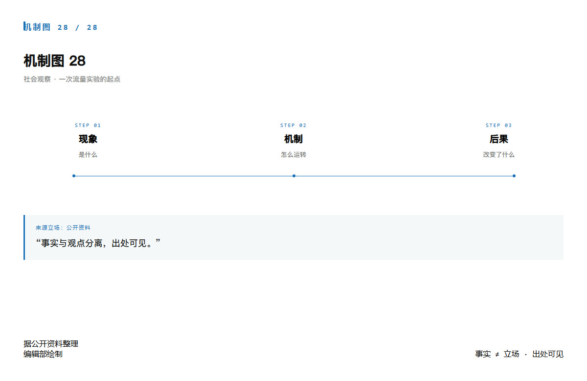

2016年8月14日凌晨，一场全民围观开始了
社会观察 · 一次流量实验的起点
零点二十一分，一份离婚声明发出。六分钟后，评论区落下第一个字：「啊」。
数据来自公开报道和学术文章，网友的话逐字照抄当年的评论汇编。当事人的具体指控，一个字都不转述。
一夜之间，关注列表丢人，点赞转发无提示，服务器被冲垮。
运营副总董文俊说那晚是「核爆」：「当大家都在心疼宝宝的时候，我们的服务器也心塞了一下。」CEO 王高飞用小号劝：「大家快睡吧……攻城狮们都困了。」流量趴了四天。
河南有个乒乓球教练，也叫宋喆。他早上六点爬起来，手机里十几个未接来电，朋友留言：「你的微博炸了。」
一天三十多万条留言冲着他名字来。他发微博问：「谁能解释清楚什么情况！？」配了张一脸懵的图。
微博小秘书给他的主页加了行备注：「该网友为乒乓球运动员并非王宝强前经纪人」，无妄之灾才算按停。
话题阅读 99 亿；同日开幕的奥运会，204 亿。三个当事人的家事，分走奥运一半注意力。
8 月 14 日一天冒出 11069 篇公众号文章，总阅读 1.3 亿，其中 293 篇 10 万+；一周 10 万+ 爆文过千。
有新闻客户端员工说，平时推送点击率 6%，这条消息，70%。
截至 8 月 27 日，声明微博 315 万条评论，最热 65 万赞；回应微博 489 万条评论，最热 119 万赞。声明是支持，回应是骂声。
📌 一个值得记住的数字
愤怒比声援值钱。这不是谁的道德问题，是当时那套分发规则算出来的结果：谁的情绪更强，谁就更容易被推到前面。
有人自嘲：「有钱也能被绿啊！！！吓得我不想去赚钱了！」有人喊口号：「宝宝不哭，今夜我们都是绿巨人。」还有人搬出电影台词：「不就一顶绿帽子吗，退一步海阔天空。」
豆瓣用户「教导主任」预言 48 小时后的公众号标题：《宝强老婆为什么会出轨？男人，请学会这5件事！》《成熟的男人，懂得坦然面对背叛》《我从一开始就不看好王宝强的婚姻》。
网友写：「轻松一句破骂就能赢得二十七万的点赞。这让人有点迷茫。」另一位说：「这很像在拳击沙袋上挂上仇敌照片的人们，那靶子很无辜，幻想中的敌人才是真实的发泄对象。」
还有一句：「人们的心里都住着一个马蓉，但嘴上都扮演着王宝强。」
长评写道：「自古以来，女人出轨就是天理不容，男人出轨就是全天下男人都会犯的错。成龙被原谅，文章被原谅，陈赫被原谅……道德评判和贞洁观念对女性还是不公平的。」
2013 年热搜上线时只是小功能。到 2015、2016 年，移动互联网见顶，平台抢时长。2016 年底，微博月活 3.13 亿、日活 1.39 亿。
搜索量判定下，不是最重大的，是最让人坐不住的。政策、制度、专业议题，门槛高，起情绪慢；冲突、背叛、道德审判，天然自带搜索冲动。
谁能给情绪定价，谁就定义了「发生了什么」。讲道理的人从那时候就输了起跑线。两年后，规矩写进了代码。
赫伯特·西蒙，1971 年
"A wealth of information creates a poverty of attention."
信息富足，注意力贫困。谁能抢走注意力，谁就定义了「发生了什么」。

▲ 情绪优先的正反馈环（编辑部绘制）
✍️ 那年的评论区里，你是哪一种人？
评论区说说你是哪一种。觉得有用，点个赞、点个「在看」，转给也会刷到这类热点的人。
下一篇：2018 年，这套定价规则被写进了代码。
参考
《Vista看天下》《王宝强婚变冲击波：一场「99亿」级别的全民狂欢》，2016.08.31；人民网传媒频道《微博的評論轉發功能對群體極化現象的影響》，2016.12。
新榜监测，转引自南方人物周刊《王宝强和他的时代》，2017.02；王辰瑶《面对热点：全媒体时代的新闻选择与报道策略》。
网友评论汇编：凤凰网神评辑录、新浪新闻网友汇编、微信公号神评论精选。逐字引用，引用不代表本文观点；谩骂内容不予转录。
Herbert A. Simon, "Designing Organizations for an Information-Rich World", 1971。微博 2016 年第四季度财报（公司自报口径）。
社会观察，不站任何性别立场。事实据公开来源，未证实指控不转述、不评价。拆解规则是为了理解，不是行动指南。